SCC France
FAÇONNONS LE MONDE DE DEMAIN
Qui sommes nous ?
Bienvenue chez SCC France, votre partenaire de confiance depuis plus de quatre décennies. Depuis nos débuts en 1975, notre engagement a été d'accompagner nos clients à chaque étape de leur évolution numérique, en offrant des solutions informatiques innovantes et sur mesure..
Notre Vision
À SCC France, nous croyons en la puissance de la technologie pour stimuler la croissance et améliorer la productivité. Notre vision consiste à être le catalyseur de la transformation digitale, en fournissant des solutions adaptées aux besoins spécifiques de chaque entreprise.
Notre Expertise
Notre expertise s'étend à tous les domaines de l'informatique, de l'infrastructure au cloud, en passant par la sécurité, les communications unifiées, les solutions de gestion de contenu et les services managés. Nous sommes fiers de notre capacité à fournir des solutions innovantes et sur mesure, qui répondent aux besoins spécifiques de chaque entreprise.
Engagement envers la Qualité
La qualité est au cœur de notre démarche. Nous nous efforçons constamment d'assurer l'excellence dans tout ce que nous entreprenons, que ce soit dans la prestation de services, le support client ou le déploiement de solutions technologiques avancées.
Responsabilité Sociale et Environnementale :
SCC France s'engage à respecter les normes les plus élevées en matière de responsabilité sociale et environnementale. Nous nous efforçons de réduire notre impact sur l'environnement en adoptant des pratiques durables et en encourageant nos clients à faire de même.
Explorez notre site pour en savoir plus sur notre histoire, nos valeurs et nos solutions. SCC France est bien plus qu'une entreprise de services informatiques – nous sommes votre partenaire pour réussir dans l'ère numérique.
Bienvenue dans l'avenir avec SCC France.
Où nous trouver ?
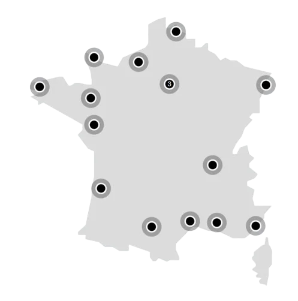SIÈGE DE SCC FRANCE – NANTERRE
96 Rue des Trois Fontanot 92744 Nanterre Cedex
Nos Services
Objectifs
SCC France vise la modernisation et l'expansion de son influence, en se concentrant sur le renforcement de la sécurité informatique, l'amélioration de l'expérience utilisateur, la modernisation des infrastructures vers le Cloud, et le développement de partenariats commerciaux et sociaux.
SCC France est guidé par l'esprit d'entreprendre, le professionnalisme, l'esprit d'équipe, l'engagement de ses salariés et la diversité des solutions proposées.
Engagé dans la responsabilité sociale et environnementale, SCC France met en œuvre le "Green IT" pour réduire son empreinte carbone, atteindre un taux de réparation de 60%, et promouvoir l'innovation en collaboration avec des partenaires tels que Lenovo et IBM.
Nos Clients
Ils nous font confiance
Thales
Thales est une entreprise française spécialisée dans les technologies de l'aérospatiale, de la défense, de la sécurité et des transports. Elle offre des solutions innovantes dans les domaines des systèmes électroniques, de la cybersécurité, de l'intelligence artificielle.
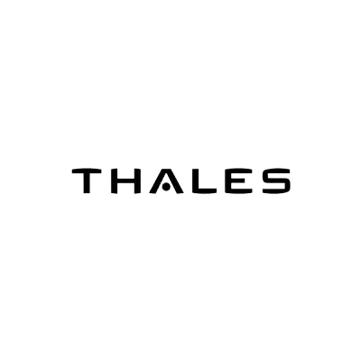“SCC en trois mots : compétences, rapidité et tenue des délais.“
Guillaume Ferriere, Responsable Projet IT Campus Thales Bordeaux
Safran
Safran est un groupe international de haute technologie opérant dans les domaines de l'aérospatiale, de la défense et de la sécurité. Spécialisé dans la conception, la fabrication et la maintenance de systèmes aéronautiques.
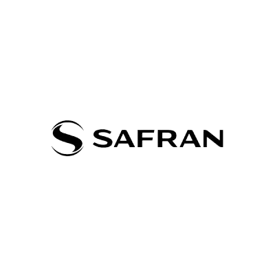“SCC en 3 mots : Réactivité, Agilité et capacité d’être à l’Écoute“
Thierry Milhé, Directeur de la production internationale des services informatiques
Rexel
Rexel est une entreprise mondiale spécialisée dans la distribution de produits électriques et de solutions pour les professionnels de l'énergie. Elle offre une large gamme de produits et services pour l'électrification, l'automatisation, et les solutions énergétiques.
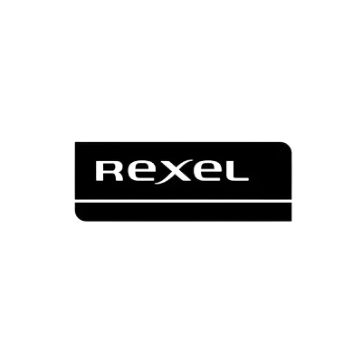“Si je devais résumer SCC sur ce projet en 3 mots c’est l’expertise, la transparence et l’engagement humain“
Dominique Bissey, Directeur de l’Innovation et Services Numériques
Bordeaux Métropoles
Bordeaux Métropole est une collectivité territoriale regroupant plusieurs communes autour de Bordeaux, en France. Elle joue un rôle central dans le développement urbain, la gestion des services publics locaux et la promotion de la qualité de vie au sein de la métropole bordelaise.

“SCC a su nous accompagner dans cette phase de transformation et dans cette complexité. Aujourd’hui nous avons été au rendez- vous et nous savons offrir aux nouveaux agents de la métropole un support de haut niveau“
Jean-Noël Olivier, Adjoint au Directeur Général en charge de la stratégie et des systèmes d’information chez Bordeaux metropole
Groupe ADP
Le Groupe ADP (Aéroports de Paris) est une entreprise française spécialisée dans la gestion et l'exploitation d'aéroports, notamment l'Aéroport de Paris-Charles-de-Gaulle et l'Aéroport de Paris-Orly. Il opère à l'échelle internationale, offrant des services aéroportuaires complets et contribuant au développement du transport aérien.
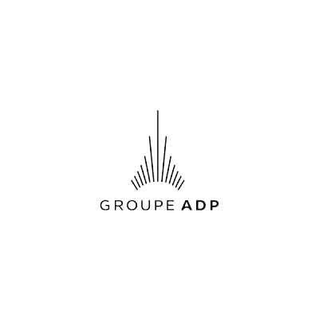“Grâce à SCC , nous ne sommes plus dans une démarché opérée mais sur un accompagnement de la prestation au globale avec des perspectives d’amélioration“
Nicolas Apchié, Responsable d’exploitation IT
Stellantis
Stellantis est un groupe automobile multinational résultant de la fusion entre PSA Peugeot Citroën et Fiat Chrysler Automobiles en 2021. Il est l'un des plus grands constructeurs automobiles mondiaux, regroupant plusieurs marques renommées telles que Peugeot, Citroën, Fiat, Chrysler, Jeep, et d'autres.

“L’exploitation d’une solution de sauvegarde totalement intégrée de bout en bout, software et hardware, nous a permis de bénéficier de toutes les fonctionnalités“
Julien Dardaine, Responsable Exploitation et Architecture de la Sauvegarde
Richardson
Richardson est une entreprise spécialisée dans les solutions de chauffage, de ventilation et de climatisation. Forte de son expertise technique, elle fournit des services de qualité pour répondre aux besoins variés de ses clients en matière de confort thermique.
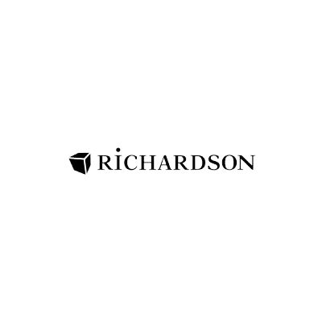“Partenaire historique de notre infrastructure siège, SCC garde un rôle essentiel dans tout ce qui est projet d’évolution et donc de transformation de notre infrastructure“
-
Hôpital de Cannes
L'Hôpital de Cannes est une institution médicale située à Cannes, en France, offrant une gamme complète de services de santé. Axée sur la qualité des soins et l'innovation médicale, l'hôpital joue un rôle essentiel dans la prise en charge des patients de la région.
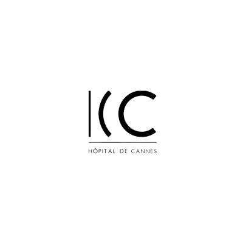“SCC nous a accompagnés pour faire le design de cette nouvelle architecture, nous a apportés le conseil technologique nécessaire et nous a permis d’avancer dans l’hyperconvergence.“
Jérôme Gouaux, Responsable SI de l’Hôpital de Cannes
Nos filiales
Altimance
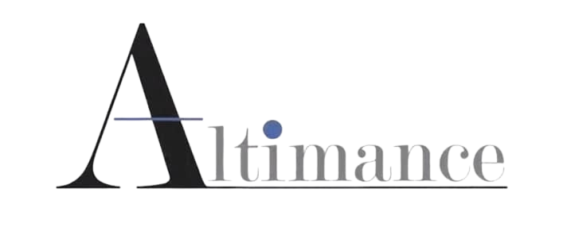Centre de services dédié à l'assistance et au support informatique des utilisateurs.
Flowline Technologies
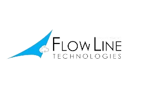Intégrateur de système de communication, hébergeur de DataCenter et opérateur Télécoms.
Recyclea
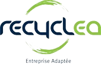Réemploi des équipements du domaine de la technologie de l'information.
Rigby Capital
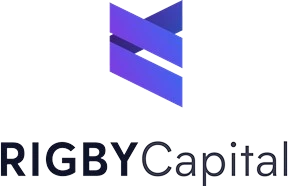Commerce interentreprises d'ordinateurs, d'équipements informatiques périphériques et de logiciels.